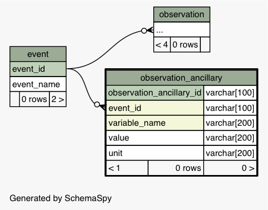

| Table edi_sandbox.ecocom_dp.observation_ancillary holds other info about a sampling event, eg, conditions, weather, observers, etc
|
Generated by SchemaSpy |
| ||||||||||||||||||||||||||||||||||||||||||||||||||||||||||||||||||||||||||
Table contained 0 rows at Sun Oct 08 15:14 PDT 2017 | ||||||||||||||||||||||||||||||||||||||||||||||||||||||||||||||||||||||||||
Indexes:
| Column(s) | Type | Sort | Constraint Name |
|---|---|---|---|
| observation_ancillary_id | Primary key | Asc | observation_ancillary_pk |
| observation_id + measured_entity + characteristic + variable_name | Must be unique | Asc/Asc/Asc/Asc | observation_ancillary_uniq |
|
 |